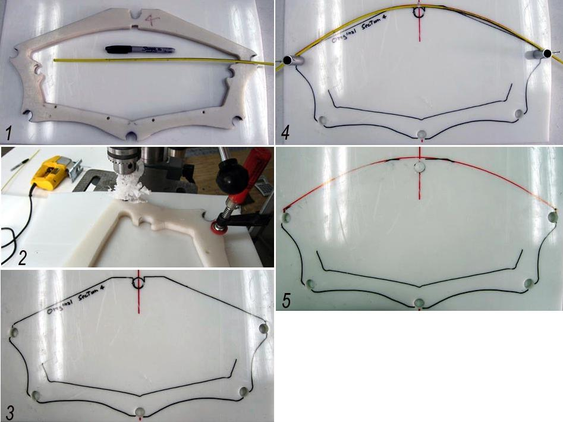

| Sea Rider Frame Changes - ( Masik 1 of 2) | Menu Last Page Next Page |
|

The pics above and on the next page illustrate the process used for construction of a rounded masik shape ( section 4) on the Sea Rider. Steps 1 thru 5 are explained below and steps 6 thru 8 on the next page.
1. Sea Rider Cross section 4 with R/C pushrod and marker pen. |
|